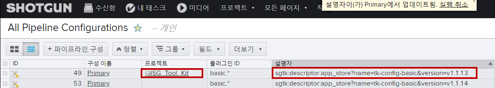

Shotgun 데스크톱 설치 및 배포
Installing and distributing Shotgun Desktop
First let's talk about how to manage the shotgun desktop application version for everyone in your studio.
먼저 스튜디오에 있는 모든 사용자를 위해 shotgun 데스크톱 애플리케이션 버전을 관리하는 방법에 대해 알아보겠습니다.
Unfortunately there's a handy link up here than any artists can click on which lets them download the latest version. 안타깝게도 여기 클릭할 수 있는 아티스트보다 더 편리한 링크가 있어 최신 버전을 다운로드할 수 있습니다.

The problem with that is artists can end up with different versions if they download the installer at different times. 문제는 아티스트가 다른 시간에 설치 프로그램을 다운로드하면 다른 버전으로 끝날 수 있다는 것입니다.
Instead nominate an administrator who downloads the Installer once distributes it to everyone in the studio and handles installation. 대신 설치 프로그램을 다운로드하면 스튜디오에 있는 모든 사용자에게 배포하고 설치를 처리하는 관리자를 지정합니다.
This is a common best practice with most desktop software installers but again you'll have to work against the easy discoverability of the download link here to make it happen. 이는 대부분의 데스크톱 소프트웨어 설치 프로그램에서 일반적으로 사용하는 모범 사례이지만 다운로드 링크가 쉽게 검색될 수 있도록 하려면 여기에서 작업해야 합니다.
The shotgun desktop app itself currently has no auto update mechanism. 숏건 데스크탑 앱 자체는 현재 자동 업데이트 메커니즘이 없습니다.
That said it's really just a shell that hosts other toolkit components that do auto update by default so when should you distribute updates. 즉, 기본적으로 자동 업데이트를 수행하는 다른 툴킷 구성 요소를 호스팅하는 셸 뿐이므로 업데이트를 배포해야 합니다.
And how do you even know when there is an update. 업데이트가 있는지 어떻게 알 수 있을까요?
Well if you visit the release notes page for shotgun desktop and then log in you can click this follow updates button at the bottom of the page. 숏건 데스크톱의 릴리스 노트 페이지를 방문한 다음 로그인하면 페이지 하단에 있는 다음 업데이트 버튼을 클릭할 수 있습니다.
Now whenever a new version of shotgun desktop is released you'll be notified. 이제 새 버전의 숏건 데스크톱이 출시될 때마다 알림이 표시됩니다.
Then you can read the release notes to determine if it's worth downloading and distributing it to your artists. 그런 다음 릴리스 노트를 읽고 해당 노트를 다운로드하여 아티스트에게 배포할 가치가 있는지 확인할 수 있습니다.
New versions of shotgun desktop are historically released infrequently so management shouldn't be too much of an issue. 새로운 버전의 숏건 데스크톱은 역사적으로 자주 배포되지 않으므로 관리 작업에는 큰 문제가 없어야 합니다.
As with web browsers there's no good way to force users onto different versions of shotgun desktop prep project. 웹 브라우저와 마찬가지로, 사용자들이 다른 버전의 숏건 데스크톱 준비 프로젝트에 강제로 참여하도록 하는 방법은 없습니다.
So it's important to choose a convenient time to update it not for example the week before a huge client alert. 따라서 거대한 클라이언트 경고가 발생하기 전에 예를 들어 일주일이 아닌 업데이트하기에 편리한 시간을 선택하는 것이 중요합니다.
I'll go ahead and install desktop now and then launch. 이제 데스크톱을 설치하고 실행 해 보겠습니다.
It great we're up and running. 우리가 잘 운영되고 있습니다.
If you check the about link from the menu in the bottom right you'll see that we have indeed installed the specific app version we intended to. 오른쪽 아래 메뉴에서 에 대한 링크를 선택하면 원하는 특정 앱 버전을 실제로 설치했음을 알 수 있습니다.

that's the part that won't auto update but we've also got a bunch of other stuff here start up version and engine version a core version and a toolkit basic configuration version. 이 부분은 자동 업데이트되지 않지만, 시작 버전과 엔진 버전, 그리고 툴킷 기본 구성 버전도 여기에 있습니다.

These are all components the shotgun desktop application needs to load its site environment which is what we're looking at here and these will auto update to new versions by default or you can lock them down and manage them from a central location. 이 모든 구성 요소는 숏건 데스크톱 애플리케이션이 현재 사용 중인 사이트 환경을 로드하는 데 필요한 구성 요소로, 기본적으로 새 버전으로 자동 업데이트되거나 새 버전을 잠그고 중앙 위치에서 관리할 수 있습니다.

Either way unlike the desktop installer you won't ever have to manually distribute updates to your artists computers. 데스크톱 설치 프로그램과 달리 수동으로 아티스트 컴퓨터에 업데이트를 배포 할 필요가 없습니다.
기초 구성을 잠가야 합니까
Here's more good news. 더 좋은 소식이 있어요.
Desktops basic configuration also serves as the fallback configuration for all your shotgun projects. 데스크톱 기본 구성은 모든 샷건 프로젝트에 대한 예비 구성 역할도 합니다.
For example if I visit the hyperspace madness projects project environment, desktop checks the App Store for updates to the basic configuration and if there is an update its downloaded along with any app engine and framework versions that config references that don't already exist on a local disk. 예를 들어 하이퍼스페이스 광기 프로젝트 환경을 방문하는 경우 데스크톱은 App Store에서 기본 구성에 대한 업데이트를 확인하고, 아직 로컬에 없는 디스크를 구성하는 앱 엔진 및 프레임워크 버전과 함께 다운로드한 업데이트가 있는지 확인합니다.
After that I'm presented with a few apps if I visit another project I get the same thing. 그 후 다른 프로젝트를 방문하면 똑같은 것을 얻을 수 있습니다.
Later I'll show you how to override the config per project so we can make different sets of pipeline and artist tools available to different projects. 나중에 프로젝트당 구성을 재정의하는 방법을 보여 드리겠습니다. 그러면 다른 프로젝트에서 다양한 파이프라인 및 아티스트 도구를 사용할 수 있습니다.
But for now Desktop falls back to the same basic config that it checks for and downloads every time it's launched and that it uses for its site environment. 하지만 지금은 데스크톱이 실행될 때마다 그리고 사이트 환경에 사용할 때마다 확인하고 다운로드하는 동일한 기본 구성으로 돌아갑니다.
So do you want to take control of the basic configuration? 기본 구성을 제어하려고합니까?
Let's take a look at our handy decision-making spreadsheet again from all the screen you can tell that I think it's a good idea. 모든 화면에서 편리한 의사 결정 스프레드시트를 다시 살펴보도록 하겠습니다.
You'll have the flexibility to lock down config versions for your entire studio and/or lock specific projects to different configurations which empowers you to surgically distribute updates to pipeline tools instantly anyone who has access to your shotgun site on your schedule and rollback instantly if issues crop up. 유연하게 전체 스튜디오의 구성 버전을 잠그거나 특정 프로젝트를 다른 구성으로 잠그면 숏건 사이트에 즉시 액세스할 수 있는 경우 즉시 파이프라인 도구에 업데이트를 배포할 수 있습니다.
There's really no downside except for the obvious fact that some management is required. 일부 관리가 필요하다는 분명한 사실 외에는 어떤 단점도 없습니다.
But if you hope to unlock the raw power of toolkit and gain access it's amazeballs development platform then you'll have to lock down the config version anyway there's really no way around it. 하지만 툴킷의 원시 파워를 잠금 해제하고 amazeballs 개발 플랫폼에 접근하려면 구성 버전을 잠가야 합니다.
So are you a noodle er you have development resources to spare want to kick some ass at your studio does that sound like you cool and let's take a look at managing all this stuff. 자, 여러분은 여분의 개발 자원을 가지고 있는 라면 인가요? 여러분의 스튜디오에서 멋있게 보이고 이 모든 것들을 관리하는 것을 살펴봅시다.
기초 구성 버전 잠그기
Let's begin by locking more of these versions down. 먼저 이 버전들 중 더 많은 버전을 잠그는 것으로 시작하겠습니다.
It makes sense to start at the bottom of the list here. 여기 목록의 맨 아래에서 시작하는 것이 좋습니다.

We can see that a specific version of the toolkit basic configuration is being used. 툴킷 기본 구성의 특정 버전이 사용되고 있음을 알 수 있다.
And here it is on disk in the App Store's bundle cache folder.
App Store의 번들 캐시 폴더에 있는 디스크에 있습니다.
C:\Program Files\Shotgun\Resources\Python\bundle_cache\app_store\tk-config-basic\v1.1.12
Incidentally you can see that its github repo name is TK can fakebasic. 덧붙여 당신은 그것의 github repo 이름이 TK인지 fakebasic 할 수 있음을 볼 수 있습니다.
Now if the fine folks here at shotgun software release a new version of TK config basic it will be automatically downloaded to this location. 이제 여기 샷건 소프트웨어에 있는 사람들이 새로운 버전의 TK 구성을 출시하면 이 곳에 자동으로 다운로드 될 것입니다.
And shotgun desktop will consult it to determine which versions of the engine and core to use next time desktop is launched. 그리고 샷건 데스크톱은 다음 번에 데스크톱을 시작할 때 사용할 엔진과 코어의 버전을 결정하기 위해 이 데스크탑과 상의합니다.
So it logically follows that if you lock down the basic configuration the core and engine versions will also be locked down. 따라서 기본 구성을 잠그면 코어 및 엔진 버전도 잠깁니다.

Three birds with one stone great. 일석이조 입니다.
So how do we tell a shotgun desktop to lock down to a specific version of TK config basic. 샷건 데스크톱에서 특정 버전의 TK 구성 기본 버전으로 잠그도록 지시하는 방법은 무엇입니까?
Let's head over to shotgun. 샷건으로 갑니다.
If you don't already have an all pipeline configurations page create one now. 아직 모든 파이프라인 구성 페이지가 없으면 지금 페이지를 만듭니다.


Next create a new pipeline configuration called primary and make sure the project field is empty. 그런 다음 Primary라고 하는 새 파이프라인 구성을 생성하고 프로젝트 필드가 비어 있는지 확인합니다.

Next set the plug-in IDs field to basic dot star.
And set the descriptor field to the following string. 그런 다음 플러그인 ID 필드를 기본 도트 별으로 설정합니다.
Basic star tells toolkit to use this configuration for all quote basic plugins.
basic.*는 툴킷에 모든 견적 기본 플러그인에 대해 이 구성을 사용하도록 지시합니다.

If you wanted to target the nuke engine plug-in specifically for example you type basic nuke. 예를 들어, 특정 대상 엔진 플러그인을 지정하려면 기본 nuke를 입력합니다.
Everything shotgun software ships as of March 2018 is a basic plug-in but you might write your own engine plugins and choose to namespace them differently. 2018년 3월 현재 샷건 소프트웨어가 출하하는 모든 것은 기본 플러그인이지만 엔진 플러그인의 이름을 직접 작성하여 이름을 다르게 지정할 수도 있습니다.
For example if you wanted to target a custom in-house DCC called the game maker in a studio called cat fire one of your plugin IDs might be cat fire game maker. 예를 들어 cat fire라는 스튜디오에서 게임 제조업체라고 하는 사용자 지정 내부 DCC를 대상으로 지정하려면 해당 플러그인 ID 중 하나가 cat fire 게임 제조업체일 수 있습니다. 예를 들어 회사에 켓파이어라고 불리는 게임 메이커라는 커스텀 인하우스툴을 목표로 한다면
Here's a doc if you want more info. 더 많은 정보를 원하시면 여기 문서가 있습니다. http://developer.shotgunsoftware.com/tk-core/initializing.html#plugins-and-plugin-ids
Okay. So what have we done absolutely nothing actually or instructing shotgun desktop to do exactly what it's already doing to always check for.
And download the latest version of TK config basic from the App Store to instead lock the config down to a specific version we first need to know what version we want to lock.
It to to best determine that visit the integrations release notes page. 통합 릴리즈 노트 페이지를 방문하는 것이 최선입니다.
When you first visit this page take a moment to click follow new articles so you'll be notified when new versions of configurations are released. 이 페이지를 처음 방문하면 새 문서를 클릭하여 새 구성 버전이 출시되면 알림을 받게 됩니다.
After that click on the major release you're interested in. 그런 다음 관심 있는 주요 릴리즈를 클릭하십시오. https://support.shotgunsoftware.com/hc/en-us/sections/115000020494-Integrations
Next scroll around to discover info about the most recent version release. 그런 다음 스크롤하여 최신 버전 릴리스에 대한 정보를 검색합니다.
Great. So it looks like this here is the most recent version. 좋습니다. 여기 보시는 것이 가장 최신 버전인 것 같습니다.

I'll drop that into our descriptor field in shotgun and relaunch shotgun desktop.
이를 샷건의 descriptor(설명자) 필드에 넣고 샷건 데스크톱을 다시 시작할 것입니다.

Cool. We've successfully locked the basic config and thus the engine and core versions. 좋습니다. 기본 구성을 성공적으로 잠궈 엔진과 코어 버전을 만들었습니다.

Now you can sit back relax and know that your Studios shotgun related tools aren't going to randomly explode for your whole site. Good job. 이제 편히 앉아서 스튜디오와 관련된 도구가 전체 사이트에 대해 무작위로 폭발하지 않는다는 것을 알 수 있습니다.
We're done so if you follow all my recommendations you'll take responsibility for distributing a single version of the desktop installer to artists computers. 모든 권장 사항을 따르는 경우 데스크톱 설치 프로그램의 단일 버전을 아티스트 컴퓨터에 배포해야 할 책임이 있습니다.
You'll lock down your site's basic config and that's the engine and core versions but let your startup version auto update. 사이트의 기본 구성을 잠그고, 엔진과 코어 버전이지만 시작 버전이 자동으로 업데이트됩니다.
That all might have seemed long-winded and a lot to learn but there's a huge payoff great. 이 모든 것이 배울 것이 많은 것처럼 보였을 수도 있지만 엄청난 보상이 있습니다.
구성 버전 관리
Great. So we locked down shotgun desktop to a reasonable degree and if it's not yet obvious we've also locked down the versions of all the shotgun related tools for all new and existing shotgun projects in all our artists DCC's. 좋습니다. 그래서 우리는 샷건 데스크탑을 고정시켰습니다. 그리고 아직 확실하지 않다면, 모든 DCC에 있는 모든 신, 기존 산탄총 프로젝트에 사용되는 산탄총 관련 도구들의 버전도 차단했습니다.
If I navigate to any project I'll get the same set of tools every time. 어떤 프로젝트든 탐색하면 매번 동일한 도구 세트를 얻을 수 있습니다.
No surprise Auto updates because the toolset is now controlled by our global versioned site primary config. 도구 세트가 이제 글로벌 버전 사이트 기본 구성으로 제어되므로 놀라운 자동 업데이트가 없습니다.
Here's the publisher app for example running in an existing project. 다음은 기존 프로젝트에서 실행되는 게시자 앱입니다.
Let's check its version. 그것의 버전을 확인해 봅시다.
Now let's make a new project refresh our projects list and open the publish app. 이제 새 프로젝트를 새로 고치고 게시 응용 프로그램을 열겠습니다.
It'll always be the same version and it won't suddenly change under your artists feet. 그것은 항상 같은 버전이고 당신의 예술가들의 발 아래에서 갑자기 바뀌지 않을 것이다.
But what if you want to lock down one particular project to a different version of the basic configuration. 그러나 특정 프로젝트를 다른 버전의 기본 구성으로 잠그려면 어떻게 해야 합니까?
Yeah why would someone want to do that well. 네, 왜 그렇게 잘하고 싶은 거죠?
If a project is headed into a particularly delicate period of production, 만약 프로젝트가 특히나 민감한 생산 기간으로 향하고 있다면
The VFX soup may want his or her artists tools to be temporarily insulated from changes to the global site config setting that up is super easy just copy the primary config link it to the project in question specify the config to use and that's it. VFX 수프는 자신의 아티스트 도구가 글로벌 사이트 구성 설정의 변경으로부터 일시적으로 격리되기를 원할 수 있습니다. 이 설정은 해당 프로젝트에 복사하기만 하면 됩니다. 이 링크는 사용할 구성을 지정하는 것입니다.
Shotgun desktop will prefer and load capital P primary configs with a project link over the primary site config. Shotgun 데스크톱은 기본 사이트 구성보다 프로젝트 링크가 포함된 자본 P 기본 구성을 우선 로드합니다.
Here's another scenario. 여기 또 다른 시나리오가 있습니다.

When a projects archived apulian field is set you could set up an event daemon trigger that creates a new primary config for the project unless one eye already exists based on the current primary site config. 프로젝트 아카이브 부울 필드가 설정된 경우 현재 주 사이트 구성을 기반으로 한 눈이 이미 존재하지 않는 한 프로젝트의 새 기본 구성을 생성하는 이벤트 데몬 트리거를 설정할 수 있습니다.
That way if an artist needs to access something in the project two or three years later they'd have the exact same tool set they had when the project wrapped. 그렇게 해서 예술가가 2, 3년 후에 프로젝트의 어떤 것에 접근해야 한다면, 그들은 프로젝트가 마무리 되었을 때 가지고 있던 것과 똑같은 도구를 갖게 될 것입니다.
You've essentially preserved a full pipeline known to be compatible with whatever workflows and files were in play for this project when it was active. 이 프로젝트가 활성화되었을 때 이 프로젝트에서 실행 중이던 워크플로우 및 파일과 호환되는 것으로 알려진 전체 파이프라인을 보존했습니다.
Finally you could even do something crazy like set up a project to use a config without a version number so only that one project pulled all the latest updates from the AppStore if one project is run by a leeding-edge kind of soup. 마지막으로, 버전 번호가 없는 구성을 사용하도록 프로젝트를 설정하는 것과 같은 미친 일도 할 수 있습니다. 따라서 하나의 프로젝트가 리딩에 의해 실행되는 경우 AppStore에서 최신 업데이트를 모두 가져올 수 있습니다.
Hopefully you're starting to realize how flexible this approach to config management is and how many options you have the next step of course is to take control of config itself and make changes to some of the artists tools instead of just playing around with version numbers and software entities. 구성 관리에 대한 이 접근 방식이 얼마나 유연한지, 그리고 다음 단계의 몇 가지 옵션이 있다면 버전 번호와 소프트웨어만 사용하는 대신 구성 자체를 제어하고 일부 아티스트 도구를 변경하는 것입니다.
But it does get a little more complicated from here on out so if you have everything you need feel free to stop the video so far we've been using. 하지만 이제부터는 좀 더 복잡해지니까, 지금까지 사용해오던 비디오를 마음껏 중단해 보세요.
구성 인계받기
So far we've been using the app store descriptor type to instruct chalk and desktop to download and load specific versions of TK config basic from the shotgun app store. 지금까지 저희는 앱 스토어 설명자 유형을 사용하여 분필과 데스크톱이 산탄 애플리케이션 스토어에서 기본 TK 구성의 특정 버전을 다운로드하고 로드하도록 지시했습니다.
Now the shotgun app store is actually just a shotgun site that we here at shotgun manage internally it's where we store the configs engines apps and frameworks that you as our clients. 사실 산탄총 앱 스토어는 산탄총에서 내부적으로 관리하는 산탄총 사이트입니다. 고객으로서 구성 엔진 앱과 프레임워크를 저장하는 곳입니다.
But you can't upload anything to the App Store. 하지만 앱스토어에 아무것도 업로드할 수 없습니다.
You have no control and can't change anything. 당신은 통제할 수 없고 아무것도 바꿀 수 없다.
Bummer right but hold on.
You can use your own site the same way as a sort of private App Store that only users of your shotgun site can access. 사용자는 자신의 사이트를 샷건 사이트 사용자만 액세스할 수 있는 개인 App Store와 같은 방식으로 사용할 수 있습니다.
And that you can upload new configs engines apps and frameworks too. 또한 새로운 구성 엔진 애플리케이션 및 프레임워크를 업로드할 수 있습니다.
That's all made possible with the shotgun descriptor type.
이 모든 것이 샷건 설명자 descriptor 유형으로 가능합니다.
Let's get our hands dirty by changing this epithet.
Let's distribute the TK can fake basic payload to our artists from our own shotgun site instead of the shotgun app store. TK는 샷건 앱스토어가 아닌 우리 자신의 샷건 사이트에서 우리 아티스트들에게 기본 페이로드로 위장할 수 있습니다.
First download the version of TK config basic that you're interested in from shotgun software's github site. 먼저 샷건 소프트웨어의 Github 사이트에서 관심 있는 TK 구성 기본 버전을 다운로드하십시오.
Next add a file link field through the pipeline configuration entity called uploaded config if someone hasn't already created. 그런 다음 업로드된 구성을 호출한 파이프라인 구성 엔티티를 통해 파일 링크 필드를 추가합니다(다른 사용자가 아직 생성되지 않은 경우).
It upload the TK config basic zip file the one that you just downloaded to the SG uploaded config field. 방금 SG 업로드 구성 필드에 다운로드한 TK 구성 기본 zip 파일을 업로드합니다.
Done! Now when I reload shotgun desktop it'll download the config from my shotgun site instead of the shotgun app store. 완료! 이제 샷건 데스크톱을 다시 로드하면 산탄총 앱 스토어 대신 내 산탄총 사이트에서 구성을 다운로드합니다.
And if I want I can see the download in the bundle cache by navigating to the shotgun descriptor folder. 원하는 경우 shogun descriptor 폴더로 이동하여 번들 캐시에서 다운로드를 볼 수 있습니다.
Here we have the ID of the pipeline configuration entity and the ID of the attachment that's storing the configuration payload as responsible. 여기 파이프라인 구성 엔티티의 ID와 구성 페이로드를 책임지는 대로 저장하는 첨부 파일의 ID가 있습니다.
버전 제어
As responsible citizens of the galaxy we should always encourage each other to version control critical files like a complex code or settings files. 책임있는 은하계 시민으로서 우리는 항상 서로에게 복잡한 코드나 설정 파일과 같은 중요한 파일들을 제어하도록 격려해야 한다.
This is one of those times. 지금이 바로 그런 때야.
I'm going to strongly encourage you to version control your config. 저는 당신이 당신의 구성을 제어할 것을 강력히 권할 것입니다.
It's up to you how you want to do it with perforce or git or CBS or SVN etc. 당신이 그것을 어떻게 할 것인가는 당신에게 달려있다.
If your studio already uses version control technology you should probably just use that. 스튜디오에서 이미 버전 제어 기술을 사용하고 있다면, 아마 그냥 사용해야 할 것입니다.
If you're a games company for example you'll likely want to use perforce. 예를 들어 게임 회사일 경우 Perforce를 사용할 수 있습니다.
Here at shotgun software we use github to manage and collaborate on code so I'll use github for this demo. 여기 샷건 소프트웨어에서는 Github를 사용하여 코드를 관리하고 공동작업을 하므로 이 데모에서는 github를 사용할 것입니다.
As an aside if you haven't chosen a version control technology or service at your studio yet I highly recommend github. 별개로, 만약 당신이 당신의 스튜디오에서 버전 제어 기술이나 서비스를 선택하지 않았다면 나는 Github를 강력히 추천한다.
It's got a snappy intuitive interface you can access it from anywhere as apposed for example to a git or perforce server running on a local network it's used and trusted by thousands of companies worldwide and you can easily migrate to a local git server if necessary. 이 인터페이스에는 간편한 인터페이스를 통해 어디서나 액세스할 수 있습니다. 예를 들어, 전세계 수천 개의 회사에서 사용하고 신뢰하는 Git 또는 Perforce 서버에 액세스할 수 있으며 필요할 경우 쉽게 로컬 서버로 마이그레이션할 수 있습니다.
Bitbucket is another good yet based solution for large corporate style studios. Bitbucket은 대기업 스타일 스튜디오를 위한 또 다른 우수하지만 기반 솔루션입니다.
So if I'm going to keep track of changes I make to teacake and vague basic I need to initialize a github repository. 그래서 만약 내가 찻잔에 대한 변경사항과 모호한 기본사항을 추적하려면, 나는 Github 저장소를 초기화해야 한다.
My shotgun site is called learn so I'll call my repo TK config learn.
내 샷건 사이트는 aiw라고 부르기 때문에 나는 내 tk-config-aiw에 전화할 것이다.
Of course you could call it whatever you want. 물론 너는 그것을 네가 원하는 대로 부를 수 있다.
I'll clone that to my desktop dump in the contents of TK config basic. TK 구성 기본 컨텐츠에 있는 데스크톱 덤프에 복제하겠습니다.
While being careful to preserve the docket ignore file a very easy thing to overlook. 도킷을 보존하기 위해 조심하는 동안 무시되는 것은 간과하기 쉬운 일이다.
And post that to a branch named after the version of TK config basic that I started with. 그리고 제가 시작한 TK config basic의 버전 이름을 따서 지었습니다.
Next I'll start a development dev branch which is where I'll post work-in-progress changes. 다음으로, 진행 중인 변경 사항을 게시하는 개발 개발 개발 지점을 시작합니다.
And a master branch which is where I'll tag and release code from actually why don't I do that right now. 그리고 제가 태그를 붙이고 코드를 풀 수 있는 지점인 마스터 분기는 왜 지금 당장 그렇게 하지 않는가?
I'll push up my master branch draft the initial release download the zip file and then upload it to our primary configuration entity. 마스터 버전 초안으로 zip 파일을 다운로드한 후 기본 구성 엔티티에 업로드하겠습니다.
See how the github version number is visible here. Github 버전 번호를 보려면 여기를 클릭하십시오.
Cool right? 멋지지?
So we know exactly where it came from. 그래서 우리는 그것이 어디서 왔는지 정확히 안다.
Let's release and upload a new version to test that out. 새 버전을 릴리스하고 업로드하여 테스트해 봅시다.
Sweet but what if there's something wrong with our new version? 좋아요, 하지만 새 버전에 문제가 생기면 어쩌죠?
How do we know which version to roll back to? 어떤 버전으로 롤백할지 어떻게 알 수 있습니까?
Well you can right-click on the little attachment icon choose view uploaded config history and then filter for change event types. 작은 첨부 파일 아이콘을 마우스 오른쪽 단추로 클릭하면 업로드된 구성 기록 보기를 선택한 다음 이벤트 유형을 변경할 수 있습니다.
Now I know exactly what config I should roll back to if there are issues. 이제 문제가 있을 경우 어떤 구성을 롤백해야 하는지 정확히 알고 있습니다.
It's also handy to set up a permanent pull request against the original code you downloaded from shotgun software. 또한 샷건 소프트웨어에서 다운로드한 원래 코드에 대해 영구 당기기 요청을 설정하는 것도 편리합니다.
That way you can see the sum of all the changes you've made in one place. 이렇게 하면 한 곳에서 수행한 모든 변경사항의 합계를 볼 수 있습니다.
You could even load up older versions of our releases to really get a clearer view of what we've changed on our end. 이전 버전의 릴리즈를 로드하여 최종 단계에서 변경된 사항을 보다 명확하게 파악할 수 있습니다.
Finally let's talk about the master branch and per project branches. 마지막으로 마스터 분기와 프로젝트 분기에 대해 살펴보겠습니다.
After chatting internally we think it's a good idea to use the master branch to release to the global site config. 내부적으로 채팅한 후 마스터 분기를 사용하여 글로벌 사이트 구성에 릴리스하는 것이 좋습니다.
But you can also host project specific branches in the same repo. 그러나 프로젝트 특정 분기를 동일한 방식으로 호스트할 수도 있습니다.
For example if I wanted the artists working on the hyperspace madness project to get some extra special apps I could create a hyperspace madness branch tag a release from there something like this 예를 들어, 만약 내가 하이퍼스페이스 광기 프로젝트를 하는 아티스트들이 몇 개의 특별한 애플리케이션을 초공간 광기의 분기 태그를 만들 수 있습니다.
And post it to a primary config linked to the hyperspace madness project. 그리고 그것을 하이퍼스페이스 광기 프로젝트와 연결된 일차 구성에 게시한다.
Get it!
Here's a picture in case your brain is filling up. 여기 당신의 뇌가 가득 찰 경우를 대비한 사진이 있습니다.
Awesome now not only are config payloads coming from our own shotgun sights app store they're hooked up to specific released versions of github repo site or per project branches that we control. 멋진 구성 페이로드가 우리의 숏건 관광 앱 스토어에서 오는 것뿐만 아니라 Gitub repo 사이트 또는 프로젝트 지점별로 릴리스된 특정 버전에 연결됩니다. 우리가 통제하는
This repo should be private and shared with other developers who might make changes to configs. 이 재작성은 비공개이어야 하며 구성을 변경할 수 있는 다른 개발자와 공유해야 합니다.
개발 환경
Okay this workflow is great for distribution but not very convenient for development 이 워크플로우는 배포에는 유용하지만 개발에는 매우 적합하지 않습니다.
Is there a way to work directly in the dev branch of the TK config learn repo folder on the desktop? 바탕 화면의 TK 구성 학습 Reo 폴더의 개발 분기에서 직접 작업할 수 있는 방법이 있습니까?
Yep! Let's duplicate the primary configuration rename it dev and add our user to the user restrictions field. 예! 기본 구성 이름을 복제하여 사용자 제한 필드에 사용자를 추가하겠습니다.
Change the description type to dev and point the path variable to the TK config Learn repo. 설명 유형을 변경하여 경로 변수를 개발하여 TK 구성 학습 repo를 가리킵니다.
That's it. I'll take a moment here to point you to a doc that describes various descriptor types if you're starting to get curious. 바로 그겁니다. 궁금해지기 시작할 때 다양한 설명자 유형을 설명하는 문서를 알려드리겠습니다.
Now instead of downloading a zip config payload from the Learn shotgun site shotgun desktop will pull the ml files from the TK config learned folder on my desktop. 학습 숏건 사이트 숏건 데스크톱에서 zip 구성 페이로드를 다운로드하는 대신 바탕 화면의 TK 구성 학습 폴더에서 ml 파일을 끌어옵니다.
If I select the development config so how do I select it. 개발 구성을 선택한 경우 어떻게 선택합니다.
That's super easy just to navigate to any project click on the pulldown menu up here and choose the development config. 여기서 풀다운 메뉴를 클릭하여 개발 구성을 선택하는 것만으로도 매우 쉽습니다.
You'll get a nice blue banner if the default primary config isn't being used. 기본 구성을 사용하지 않는 경우 멋진 파란색 배너를 얻을 수 있습니다.
Note that desktop remembers your selection on a per project per user basis. 데스크톱은 사용자별로 프로젝트별로 선택한 내용을 기억합니다.
So if you really want to make absolutely sure your artists are getting the right config only allow them access to one configuration. 따라서 아티스트가 올바른 구성을 사용하고 있는지 확인하려면 하나의 구성에만 액세스할 수 있습니다.
By making use of the user restrictions field to sandbox development configs like I showed earlier. 앞서 보여드린 대로 사용자 제한 필드를 샌드박스 개발 구성에 사용합니다.
Incidentally adding a disabled user to the user restrictions field will effectively disable a config for all users. 비활성화된 사용자를 사용자 제한 필드에 우발적으로 추가하면 모든 사용자에 대한 구성이 효과적으로 비활성화됩니다.
Clearing out the plug-in IDs field will have the same effect. 플러그인 ID 필드 삭제도 동일한 효과가 있습니다.
You may need to do that from time to time all right already. 당신은 이미 때때로 그것을 해야 할 필요가 있다.
But how do we change the config. 하지만 어떻게 구성을 변경할 수 있을까요?